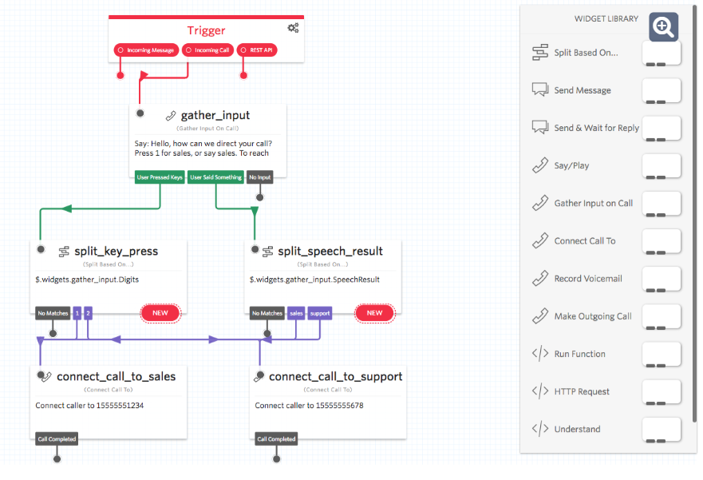
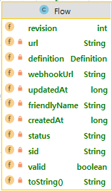
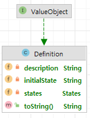
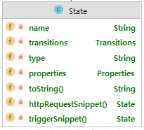
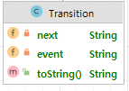

Twilio Studio Study
2022, Aug 11
twilio studio
Studio

- studio?
- low-code/no-code application builder
- save the coding work
- API 및 SDK를 제공한다.
- UI를 통해서 설정할 수도 있다.
Main Domain
Flow

- Flow?
- 하나의 업무 흐름 단위로 여러 개의 단계로 구성이 되며, 시작과 끝을 가진다.
- subflow를 정의할 수 있다.
- Field
- Definition
- 복잡한 요구 사항을 정의하고 있다.
- UI에서 Widget으로 표현되는 것들을 갖고 있다.
- webhookUrl
- webhook url을 통해 Flow시작
- status
- flow의 상태 :
draftorpublished
- flow의 상태 :
- Definition
{
"sid": "FWXXXXXXXXXXXXXXXXXXXXXXXXXXXXXXXX",
"account_sid": "ACXXXXXXXXXXXXXXXXXXXXXXXXXXXXXXXX",
**"definition":** {
"description": "A New Flow",
"states": [
{
"name": "Trigger",
"type": "trigger",
"transitions": [],
"properties": {
"offset": {
"x": 0,
"y": 0
}
}
}
],
"initial_state": "Trigger",
"flags": {
"allow_concurrent_calls": true
}
},
"friendly_name": "Main IVR",
**"status": "draft"**,
"revision": 1,
"commit_message": "First draft",
"valid": true,
"errors": [],
"warnings": [],
**"webhook_url":** "http://webhooks.twilio.com/v1/Accounts/ACXXXXXXXXXXXXXXXXXXXXXXXXXXXXXXXX/Flows/FWXXXXXXXXXXXXXXXXXXXXXXXXXXXXXXXX",
"date_created": "2017-11-06T12:00:00Z",
"date_updated": null,
"url": "https://studio.twilio.com/v2/Flows/FWXXXXXXXXXXXXXXXXXXXXXXXXXXXXXXXX",
"links": {
"test_users": "https://studio.twilio.com/v2/Flows/FWXXXXXXXXXXXXXXXXXXXXXXXXXXXXXXXX/TestUsers",
"revisions": "https://studio.twilio.com/v2/Flows/FWXXXXXXXXXXXXXXXXXXXXXXXXXXXXXXXX/Revisions",
"executions": "https://studio.twilio.com/v2/Flows/FWXXXXXXXXXXXXXXXXXXXXXXXXXXXXXXXX/Executions"
}
}
Definition

- Fields
- initialState
- 정의한 흐름 순서의 첫번째로 보통 Trigger State에 해당된다.
- States
- Widget Snippet을 통해 설정한 State들을 순서대로 갖고 있다.
- 기본적으로 Trigger State로 시작한다.
- initialState
{
"states": [
{
"transitions": [
{
"event": "incomingMessage",
"next": "send_message_1"
},
{
"event": "incomingCall",
"next": "say_play_1"
},
{
"event": "incomingRequest",
"next": "call_user_1"
}
],
"type": "trigger",
"name": "Trigger",
"properties": {
"offset": {
"y": 0,
"x": 0
}
}
},
{
"transitions": [
{
"event": "audioComplete"
}
],
"type": "say-play",
"name": "say_play_1",
"properties": {
"say": "Hello world!",
"loop": 1,
"offset": {
"y": 210,
"x": 130
}
}
},
{
"transitions": [
{
"event": "sent"
},
{
"event": "failed"
}
],
"type": "send-message",
"name": "send_message_1",
"properties": {
"body": "Hello world!",
"from": "",
"service": "",
"to": "",
"offset": {
"y": 210,
"x": -240
},
"channel": ""
}
},
{
"transitions": [
{
"event": "answered",
"next": "say_play_1"
},
{
"event": "busy"
},
{
"event": "noAnswer"
},
{
"event": "failed"
}
],
"type": "make-outgoing-call-v2",
"name": "call_user_1",
"properties": {
"trim": "true",
"machine_detection_silence_timeout": "5000",
"from": "",
"recording_status_callback": "",
"record": false,
"machine_detection_speech_threshold": "2400",
"to": "",
"detect_answering_machine": false,
"sip_auth_username": "",
"machine_detection": "Enable",
"send_digits": "",
"machine_detection_timeout": "30",
"timeout": 60,
"offset": {
"y": 210,
"x": 490
},
"machine_detection_speech_end_threshold": "1200",
"sip_auth_password": "",
"recording_channels": "mono"
}
}
],
"initial_state": "Trigger",
"flags": {
"allow_concurrent_calls": true
},
"description": "A New Flow"
}
State

- State?
- 위젯UI로 제공하는 Snippet을 바탕으로해서 state를 정의한다.
- 각 state에서 동작하는 방식을 type으로 지정하고, 성공/실패에 대한 이벤트를 transition에 정의한다.
- Fields
- transitions
- type
- addTwimlRedirect
- capturePayments
- connectCallTo
- enqueueCall
- forkStream
- gatherInputOnCall
- makeHttpRequest
- makeOutgoingCall
- recordCall
- recordVoicemail
- runFunction
- sayPlay
- sendAndWaitForReply
- sendMessage
- sendToAutopilot
- sendToFlex
- setVariables
- splitBasedOn
- 흐름에 조건을 줄 수 있다.
transition

- state에서 실행되는 transition정보를 담고 있다.
기타 step, step context, execution
- Flow가 실행되면 실시간으로 상태 및 변수에 관한 정보를 저장
{
"sid": "FTXXXXXXXXXXXXXXXXXXXXXXXXXXXXXXXX",
"account_sid": "ACXXXXXXXXXXXXXXXXXXXXXXXXXXXXXXXX",
"flow_sid": "FWXXXXXXXXXXXXXXXXXXXXXXXXXXXXXXXX",
"execution_sid": "FNXXXXXXXXXXXXXXXXXXXXXXXXXXXXXXXX",
"name": "incomingRequest",
"context": {},
"transitioned_from": "Trigger",
"transitioned_to": "Ended",
"date_created": "2017-11-06T12:00:00Z",
"date_updated": null,
"url": "https://studio.twilio.com/v2/Flows/FWXXXXXXXXXXXXXXXXXXXXXXXXXXXXXXXX/Executions/FNXXXXXXXXXXXXXXXXXXXXXXXXXXXXXXXX/Steps/FTXXXXXXXXXXXXXXXXXXXXXXXXXXXXXXXX",
"links": {
"step_context": "https://studio.twilio.com/v2/Flows/FWXXXXXXXXXXXXXXXXXXXXXXXXXXXXXXXX/Executions/FNXXXXXXXXXXXXXXXXXXXXXXXXXXXXXXXX/Steps/FTXXXXXXXXXXXXXXXXXXXXXXXXXXXXXXXX/Context"
}
}